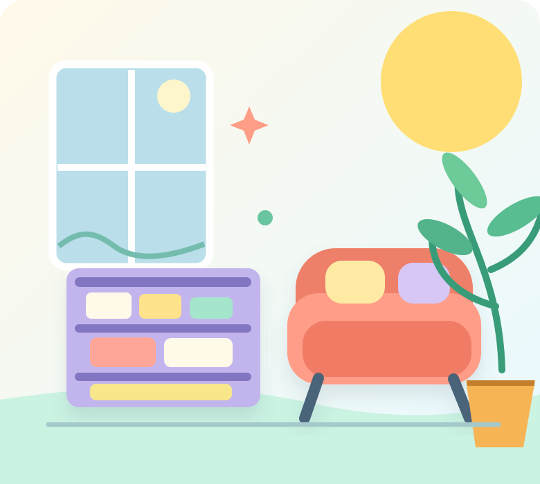

Start with how you live
Make everyday patterns—not an arbitrary organizing trend—the foundation of the plan.
Room to breathe · Thoughtful home systems
A home should make everyday life easier, not give you one more thing to manage. Explore a practical, calm approach to organizing the spaces you actually use.

The idea
Organizing isn't about chasing a perfect photo. It's about making it easier to find the keys, put away the laundry, and enjoy the rooms you already have.
Make everyday patterns—not an arbitrary organizing trend—the foundation of the plan.
Choose simple storage habits and routines that are realistic to maintain.
Build flexible solutions for seasons, families, and changing work or study needs.
Purposeful decisions can change how a room feels every day.
Practical by design
Whether it's a busy entryway, a crowded kitchen, or a workspace that never quite works, begin by identifying what causes friction.
Explore how a calm, useful home could work for you.